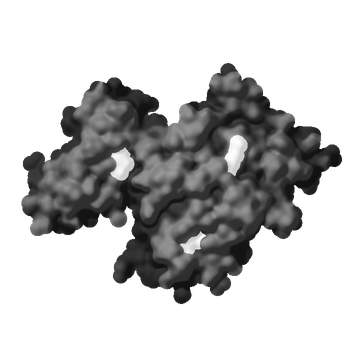

Open Science at the Source
Headwaters is a not-for-profit lab developing open data, tools, and discoveries the rest of the field builds on.
-
PhyloBot: Open-source software that reconstructs the evolutionary ancestors of proteins. Often sturdier than their modern descendants, they make better starting points for protein-based medicines. Available now →
-

Parkinson’s disease: Many genes behind Parkinson’s are known, but most variants in them are too rare to classify. We use evolutionary history to separate the damaging changes from the harmless ones. In progress
We’re just getting started. Launching in 2027.